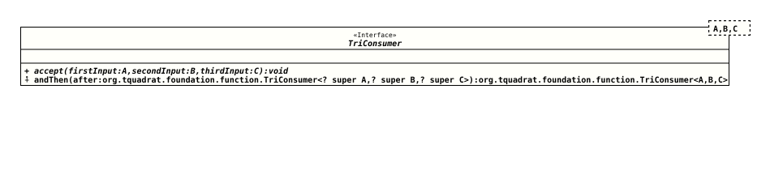

Interface TriConsumer<A,B,C>
- Type Parameters:
A- The type of the first argument to the operation.B- The type of the second argument to the operation.C- The type of the third argument to the operation.
- Functional Interface:
- This is a functional interface and can therefore be used as the assignment target for a lambda expression or method reference.
@ClassVersion(sourceVersion="$Id: TriConsumer.java 1060 2023-09-24 19:21:40Z tquadrat $")
@FunctionalInterface
@API(status=STABLE,
since="0.0.5")
public interface TriConsumer<A,B,C>
Represents an operation that accepts three input arguments and
returns no result. This is the three-arity specialisation of
Consumer.
Unlike most other functional interfaces, TriConsumer is expected to
operate via side effects.
This is a
functional interface
whose functional method is
accept(Object,Object,Object).
- Author:
- Thomas Thrien (thomas.thrien@tquadrat.org)
- Version:
- $Id: TriConsumer.java 1060 2023-09-24 19:21:40Z tquadrat $
- Since:
- 0.0.5
- See Also:
- UML Diagram
-

UML Diagram for "org.tquadrat.foundation.function.TriConsumer"
{kind=link}
-
Method Summary
Modifier and TypeMethodDescriptionvoidPerforms this operation on the given arguments.default TriConsumer<A, B, C> andThen(TriConsumer<? super A, ? super B, ? super C> after) Returns a composedTriConsumerthat performs, in sequence, this operation followed by theafteroperation.
-
Method Details
-
accept
-
andThen
Returns a composed
TriConsumerthat performs, in sequence, this operation followed by theafteroperation. If performing either operation throws an exception, it is relayed to the caller of the composed operation. If performing this operation throws an exception, theafteroperation will not be performed.Both
TriConsumers will be called with the same arguments.- Parameters:
after- The operation to perform after this operation.- Returns:
- A composed
TriConsumerthat performs in sequence this operation followed by theafteroperation.
-